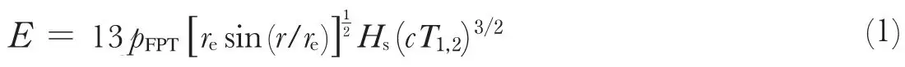
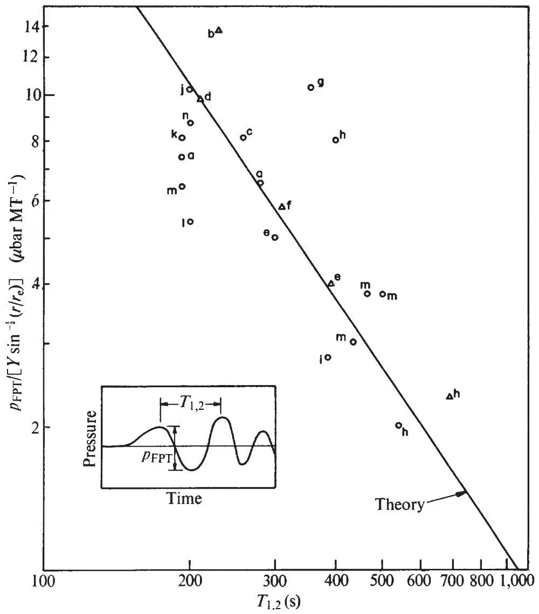
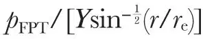

中文
中文J. W. Posey and A. D. Pierce
Editor’s Note
Physicists in the 1970s sought accurate means for estimating the yield of nuclear explosions, especially in tests then being conducted by the United States and the Soviet Union. Here Joe Posey and Allen Pierce report on the accuracy of a new formula they had derived to make such estimates from the detection of very weak air waves from the initial blast. Their formula relates the explosion energy to the peak-to-trough magnitude of the pressure variation in the wave, and also to the 3/2 power of its period. As they show using data collected for a number of weapons tests conducted in 1961 and 1962, their expression fitted all the data very well, especially for explosions weaker than about 11 megatons. 中文
FOLLOWING the US and USSR atmospheric test series in 1954–1962, numerous microbarograph records1-8 of air waves generated by nuclear bomb tests were published. Previous theoretical interpretations7,9 of such waveforms have required some explicit knowledge of the average atmospheric temperature and wind profiles above the path connecting source to microbarograph. Such profiles are never sufficiently well known and vary from point to point, and as seemingly small changes in the profiles cause relatively large changes in the waveforms, it would seem to be difficult to estimate the explosion energy yield to even order of magnitude accuracy from such records. Recently, however, in a further account of this work to be published elsewhere, we have succeeded in deriving an approximate theoretical relationship between certain waveform features and energy yield which is insensitive to changes in atmospheric structure. This relationship is given by

where E is energy release, pFPT is the first peak to trough pressure amplitude (see Fig. 1), re is radius of the Earth, r is the great circle distance from burst point to observation point, Hs is a lower atmosphere scale height, c is a representative sound speed, and T1,2 is the time interval between first and second peaks. The purpose of the present communication is to describe the extent to which the above relation agrees with the existing available data. 中文

Fig. 1. Comparison of data with the theoretical relationship between amplitude and period of infrasonic waveforms generated by nuclear explosions. The data points are lettered a to n corresponding to particular events defined in the text. ○, Donn and Shaw; △, Harkrider. 中文
The various points shown in Fig. 1 correspond to individual microbarograms recorded at Pasadena, California; Berkeley, California; Terceira, Azores; Fletcher’s Ice Island; Whippany, New Jersey; Ewa Beach, Hawaii, and Palisades, New York, after the Soviet explosions of (a) September 10 (10 MT), (b) September 11 (9 MT), (c) September 14 (7 MT), (d) October 4 (8 MT), (e) October 6 (11 MT), (f) October 20 (5 MT), (g) October 23 (25 MT), (h) October 30 (58 MT), and (i) October 31, 1961 (8 MT) and the US explosions of (j) May 4 (3 MT), (k) June 10 (9 MT), (l) June 12 (6 MT), (m) June 27 (24 MT), and (n) July 11, 1962 (12 MT). Here the estimate of the yield (in equivalent megatons of TNT where one MT equals 4.2×1022 ergs) is taken from Båth10. All the records used are taken from the articles of Harkrider7 and of Donn and Shaw8. Pressure amplitudes for Harkrider’s records were computed using his microbarograph response data. Pressure amplitudes for the Donn and Shaw records were determined according to the premises (W. Donn, private communication) that (a) all records recorded by Lamont type A microbarographs are to the same scale and (b) the clip to clip amplitude of off scale oscillations was 350 µbars. The ordinate in Fig. 1 gives

in μbar MT−1 where Y is the explosion yield in MT. The abscissa gives the period T1,2 in s. Note that the plot is full logarithmic. The solid line represents the theoretical relation, equation (1) with c and Hs taken as 310 m s–1 and 8 km, respectively. 中文
The scatter about the theoretical curve could be due to various causes; one which seems especially likely is the undulation in amplitude due to the horizontal refraction and subsequent focusing or defocusing caused by departures of the atmosphere from perfect stratification. We may note also that much of the scatter would not be present if we had omitted data corresponding to explosions of greater than 11 MT. The general trend of longer period signals being of lower amplitudes than signals recorded elsewhere but which were generated by the same event seems to be amply substantiated by the data. 中文
(232, 253; 1971)
Joe W. Posey and Allan D. Pierce: Department of Mechanical Engineering, Massachusetts Institute of Technology.
Received June 17, 1971.
References:
1. Yamamoto, R., Bull. Amer. Meteorol. Soc., 37, 406 (1956).
2. Araskog, R., Ericsson, U., and Wagner, H., Nature, 193, 970 (1962).
3. Carpenter, E. G., Harwood, G., and Whiteside, T., Nature, 192, 857 (1961).
4. Farkas, E., Nature, 193, 765 (1962).
5. Jones, R., Nature, 193, 229 (1962).
6. Wexler, H., and Hass, W. A., J. Geophys. Res., 67, 3875 (1962).
7. Harkrider, D. G., J. Geophys. Res., 69, 5295 (1964).
8. Donn, W., and Shaw, D., Rev. Geophys., 5, 53 (1967).
9. MacKinnon, R., Quart. J. Roy. Meteorol. Soc., 93, 436 (1967).
10. Båth, M., Rept. A 4270-4271 (Seismological Institute, Univ. Uppsala, 1962).